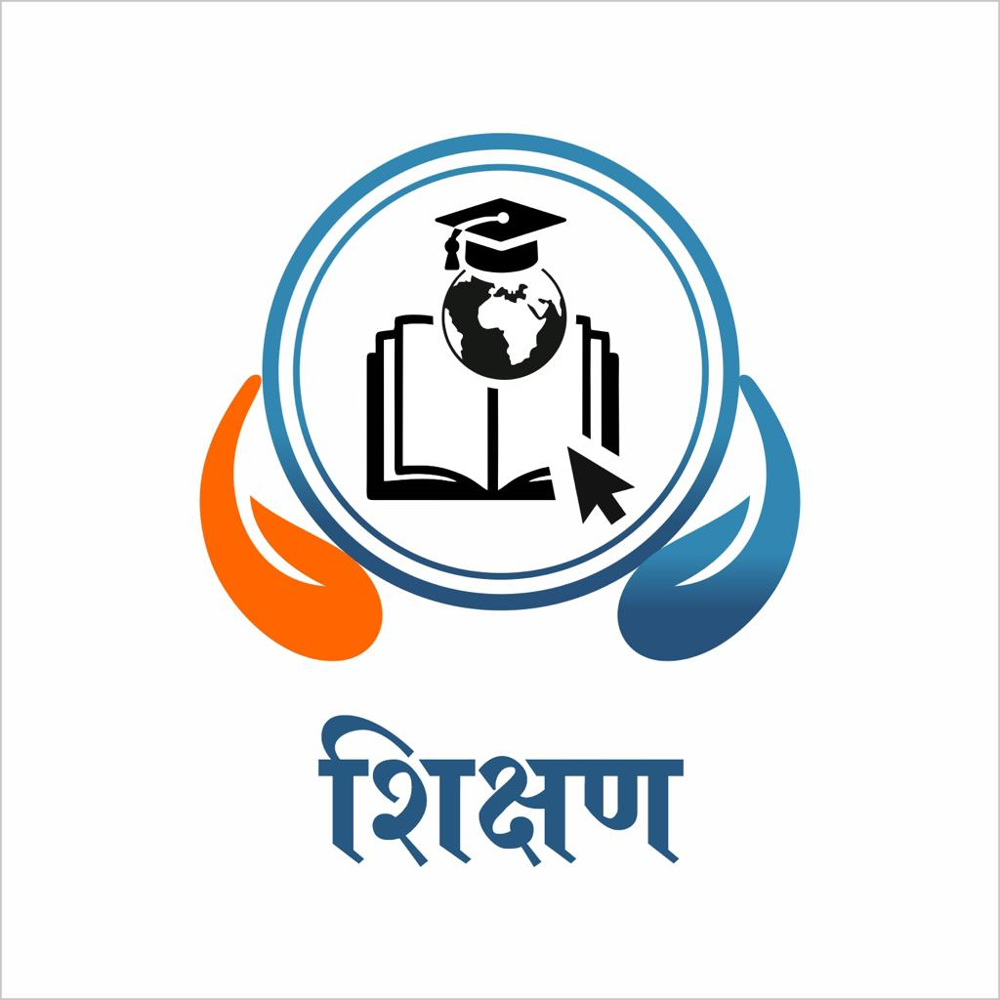

Maharashtra-rooted public trust
Seva, sanskruti, and community upliftment from rural Maharashtra.
Pandurang Pratishthan is a Maharashtra-based charitable trust connected to Bhathodi Pargaon in Ahmednagar district. Its work reflects local values of seva, public participation, education support, cultural programs, social guidance, and rural development.
Serving communities through education, women guidance, cultural programs, sports, drought relief, and village-level development.

Maharashtra identity
Rural community development
Cultural and social outreach
Pandharpur-inspired seva values
Who We Are
A foundation shaped by Maharashtra's social spirit and village-level service.
Pandurang Pratishthan stands for compassionate service rooted in the culture of rural Maharashtra. From educational support and women's guidance to sports, cultural gatherings, drought relief, and social unity programs, the trust's identity is closely tied to community life.
Our Vision
To build stronger villages and communities through service, culture, social awareness, and practical support for people in need.
- Rooted in compassion, inclusion, and accountability
- Centered on Bhathodi Pargaon and the Ahmednagar region
- Inspired by Maharashtra's collective spirit of seva and sanskruti
Local Character
The visual and written identity of this site now reflects a Maharashtra-focused trust: saffron and blue from the logo, clear institutional information, and community-centered storytelling.
Community Promise
Every initiative is presented with respect for local people, local language, and the cultural pride of the region.
Trust Profile
Important trust details presented in a website-friendly way.
This section keeps only the public-facing information useful for visitors, partners, and supporters, without exposing private record-style document details.
Public trust
Focused on social, educational, environmental, and cultural service.2018
Used here only as a simple trust background detail.Ahmednagar district, Maharashtra
Rooted in Bhathodi Pargaon and nearby rural communities.Education, environment, health, social and cultural outreach
Aligned with the activities and programs shown across the site.Bhathodi Pargaon, Ahmednagar, Maharashtra
Local identity reflected throughout the trust's community work.Village-centered, people-focused, and Maharashtra-rooted
Built around seva, participation, and practical local impact.
Institutional Support
School infrastructure support backed through an AAI CSR initiative.
This is an important public-facing credibility point for the website. Instead of showing the full legal agreement, this section highlights the practical outcome: support for school infrastructure in Bhatodi Pargaon through a CSR-backed development effort.
institutional support was received for school infrastructure development.
project duration stated for implementation and completion.
school infrastructure development in Bhatodi Pargaon.
supported through Airports Authority of India with district-level coordination.
What This Support Covered
Project Identity
Presented as a CSR initiative of Airports Authority of India for educational infrastructure support.
Location
Bhatodi Pargaon, Taluka Nagar, District Ahmednagar, Maharashtra.
Infrastructure Work
School infrastructure support including sanitation, water, and classroom development.
Implementation Structure
The support was coordinated through the Collector / District Authority, Ahmednagar.
Public Value
This strengthens the website by showing that the trust ecosystem is connected to real educational infrastructure development, not only community activities.
Programs
Core areas where Pandurang Pratishthan can make a visible difference.
The foundation's work connects education, environment, village cleanliness, and community values with the lived realities of rural Maharashtra.

Sub Topic
Education
Learning material drives, after-school support, digital literacy sessions, and scholarships for children from low-income families.
Building brighter futures
Sub Topic
Village Cleaning
Cleanliness campaigns, neighborhood drives, and community participation that help create healthier public spaces and stronger local responsibility.
Cleaner villages, stronger communities
Sub Topic
Environment
Awareness drives, plantation efforts, and practical environmental action that encourages communities to protect shared natural resources.
Protecting tomorrow together
Identity
Foundation Mission
The foundation brings together seva, awareness, and partnership so every program reflects the same values of dignity, trust, and long-term local impact.
Service rooted in values
Project Report
Tree Plantation and Culturing proposal for Nagar Taluka.
This section translates your written project report into a clear public-facing summary. It shows that Pandurang Pratishthan has thought not only about planting trees, but also about protection, watering, supervision, staffing, and long-term maintenance.
A long-term plantation idea focused on environmental recovery and village-level sustainability.
The concept can begin with smaller coverage and expand gradually as support and capacity grow.
The focus is not only on plantation, but also on nurturing and protecting trees after planting.
The trust can shape this project according to available resources, partnerships, and local support.
Project Snapshot
Project Name
Tree Plantation and Culturing
Implementing Agency
Pandurang Pratishthan, Bhatodi, Taluka Nagar, District Ahmednagar, Maharashtra 414201
Main Objective
Increase tree cover, support rainfall recovery, reduce drought pressure, and build long-term environmental sustainability in Nagar Taluka.
Coverage Area
Nagar Taluka, Ahmednagar district, with scope to begin from selected villages and grow over time.
Implementation Window
The work can begin in planned phases, followed by regular care and follow-up support.
Village Staffing
Local caretakers, volunteers, and community partners can help maintain plantation efforts in a realistic way.
Employment Generation
The project can create local engagement opportunities through caretaking, monitoring, transport, and support activities.
Budget and Execution Highlights
The report shows thoughtful planning around plantation, protection, watering, and follow-up care. For the website, it is better to present this as a scalable environmental initiative rather than as a very large fixed-cost proposal.
Year 1
Start with pilot villages, plantation preparation, and community coordination.
Year 2
Focus on tree care, watering, survival monitoring, and local participation.
Year 3
Strengthen maintenance, review impact, and expand carefully where feasible.
Pilot-Based Approach
Start from manageable plantation clusters and expand with lessons learned from the first phase.
Protection Plan
Protect planted trees through practical low-cost measures suitable to local conditions.
Watering Logic
Combine initial watering with continued monitoring so planted trees have a better survival rate.
Why It Matters
The report directly links tree plantation with drought mitigation, rainfall support, soil health, and long-term environmental balance in Ahmednagar district.
Past Work
Programs and public events already associated with the foundation.
Based on the event materials and clippings you shared, this section helps the website show the trust as active, rooted, and experienced rather than newly imagined.
Water arrangements for animals during drought
Support activity focused on helping animals and communities affected by water scarcity.
Educational material distribution
Distribution programs for school-going children and local educational support needs.
Pranayam and yoga camp
Community wellness outreach reflecting preventive health and disciplined living.
Lecture by Shivshahir Babasaheb Purandare
A culturally significant public event that reflects Maharashtra's historical pride and heritage.
Fodder support and cattle vaccination
Service activity for drought-affected areas with attention to livestock and agricultural realities.
Cultural programs
Events that bring communities together while preserving local tradition and public participation.
Taluka-level cricket competition
Sports-based engagement for youth, teamwork, and community spirit.
Taluka-level kabaddi competition
A sport deeply connected to regional identity and village-level participation.
State-level volleyball competition
Broader public programming that positions the trust as an organizer of large community events.
Bhajani mandal material distribution
Support for devotional and community groups connected with local cultural life.
Social unity and caste harmony program
Public-facing efforts that encourage peace, respect, and social cohesion.
Women's guidance mela
An outreach activity focused on women's support, awareness, and community participation.
Gallery
Snapshots from village-level work and community outreach.
The gallery highlights the on-ground work already available in the workspace. It can later expand with event posters, newspaper highlights, and more program photos.
Village Cleaning Drive
Community-led cleanliness activity focused on healthier surroundings, awareness, and local participation.
Education Outreach
Encouraging learning, access, and student support through education-centered initiatives.
Environment Action
Promoting conservation, awareness, and greener local habits through environmental work.
Institutional Strength
The trust profile now shows continuity, legitimacy, and public purpose.
Instead of exaggerated numbers, this section emphasizes simple public-facing signals of continuity, community trust, and ongoing local work.
trustees forming the current governing body shown on the site
foundation year reflected in the trust profile
covered in the tree plantation proposal for Nagar Taluka
a clear regional identity reflected in the trust location, event types, and cultural positioning
What Visitors Should Know
Important things an NGO website should tell people clearly.
Visitors usually want to know what the trust stands for, how it works with communities, and where they can contribute meaningfully. These points make the website feel more complete and trustworthy.
The trust should communicate its mission, activities, and public initiatives in a simple and responsible way.
Local people, volunteers, schools, youth, and partner groups all play a role in building lasting social impact.
Programs are strongest when they respond to actual village, education, environment, and social needs.
Volunteer Journey
How a visitor can become a volunteer.
People are more likely to help when the next steps are obvious. This section explains how someone can connect with the trust and start contributing.
Share your name, contact details, location, and the type of support you want to offer through the contact form.
Volunteers may support education, village cleaning, events, women's programs, health awareness, environment work, or cultural activities.
After receiving the message, the trust can contact the interested person and guide them toward the right activity or local event.
Get Involved
Many hands can help this mission grow faster and further.
The website invites support from volunteers, donors, educators, doctors, social workers, and community well-wishers.
Volunteer Time
Support events, teaching sessions, health outreach, and local coordination with your skills and presence.
Donate Resources
Contribute books, stationery, hygiene kits, medical supplies, or financial support for programs.
Partner With Us
Collaborate as a school, clinic, social group, or business that wants to create measurable local impact.
Leadership
Trustees and governing body.
The trustee names and roles are shown here in a simple public-facing format. Education, profession, and member photos can be added once you want to publish them.
Add member photo here
Add member photo here
Add member photo here
Add member photo here
Add member photo here
Add member photo here
Add member photo here
Contact
Start a conversation with Pandurang Pratishthan.
The details below are kept intentionally simple for website use. You can still update the phone number, active email, and office details when you are ready.
Volunteer or Send a Message
This form is designed so a visitor can clearly express interest in volunteering, partnering, donating resources, or simply contacting the trust.
Contact Details
Use these details as the current public-facing base and refine them with exact office contact information.
- Trust Name: Pandurang Pratishthan
- Location: Bhathodi Pargaon, Ahmednagar, Maharashtra
- Email: pandurangpratishthan2017@gmail.com
For Volunteers
Share your skills, available time, and area of interest so the trust can connect you with the right activity.
For Donors & Partners
Use the message form to ask about educational support, community programs, environment work, or local partnerships.
Response Flow
After receiving the message, the trust team can review it and contact the person for the next step.